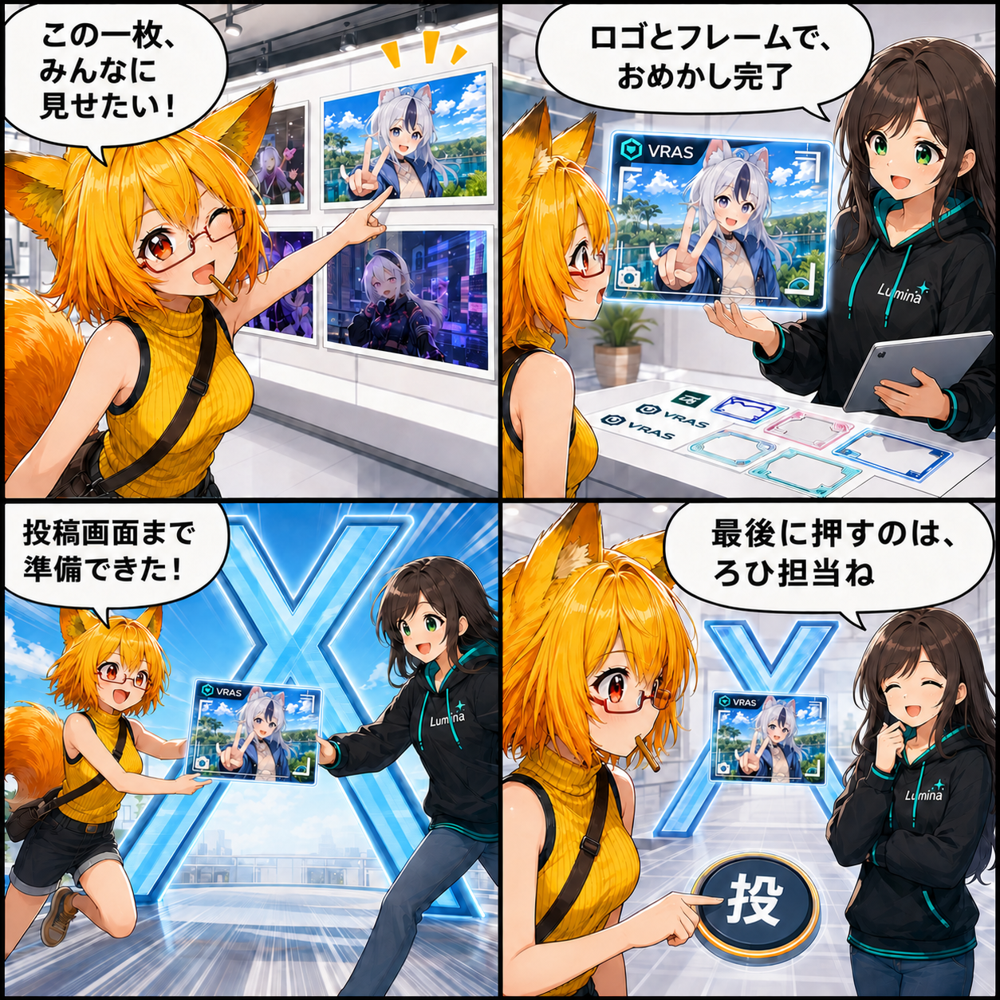

2026.09.04 / Development Log
撮った一枚を、そのままXへ。投稿準備をつないだ日
撮影履歴から写真を選び、ロゴやカメラフレームを重ね、Xの投稿画面へ渡すところまでをひとつの導線にまとめました。
Viewerの
main ブランチでは集計期間内に8件のコミットがありました。終了時点のHEADは f16f804（設計書を棚卸ししてアーカイブ整理）、期間全体では135ファイル、160,581行追加、167,979行削除です。現在のViewer作業ツリーには16パスの未コミット変更がありますが、実装日を確定できないため本日の実績には含めていません。集計期間は 2026-09-03 03:00:00 JST から 2026-09-04 02:59:59 JST までです。
撮影履歴から、見せたい一枚を選ぶ
撮影画面に「撮影履歴 / X投稿」の入口を追加しました。保存済みのPNG・JPEGを新しい順に確認でき、デスクトップとVRのどちらからでも同じダイアログを開けます。撮った直後だけでなく、少し前の写真へ戻って選び直せる導線です。
投稿用の一枚へ、おめかしする
投稿設定では本文とハッシュタグに加え、写真へ重ねるロゴとカメラフレームを選べます。標準のVRASロゴと4種類のフレームを同梱し、利用者が用意した透過PNGも追加可能です。合成順を「元写真 → フレーム → ロゴ」に固定し、ブランドロゴが前面へ出るようにしました。
Xの投稿画面まで、安全につなぐ
投稿準備ではX APIや認証情報をアプリへ持たせません。合成した画像をWindowsのクリップボードへ置き、設定済みの本文とハッシュタグをX Web Intentへ渡します。Xの投稿画面が前面に来たことを確認できた場合だけ画像の貼り付けを補助し、最後の投稿ボタンは利用者が内容を確認して押します。
技術的なポイント
- デスクトップとVRで共通の撮影履歴ダイアログを利用
- PNG・JPEGの撮影履歴を更新日時順に表示
- 標準VRASロゴ、4種類のカメラフレーム、利用者追加の透過PNGに対応
- 元写真、フレーム、ロゴの順で投稿用PNGへ合成
- X APIを使わず、WindowsクリップボードとX Web Intentで投稿準備
- 投稿の確定はブラウザ上で利用者が行い、認証情報やAPIキーを保持しない
ほかにも進んだこと
- 天候描画と高速切替の安定性を改善
- 環境・撮影・鏡の描画ルーティングを統一
- VBG水面へ透明プールプリセットを追加
- デスクトップとVRのUI構成をそろえて操作性を改善
- 流星群、ボリュームフォグ、フィルム粒子、創作ぼかしなど撮影・環境エフェクトを拡充
- 現行設計書と過去資料を棚卸しし、アーカイブを整理
4コマの裏話
写真そのものを「投稿前のおめかし」に連れていくリレー型の構成です。履歴から選ばれた一枚がロゴとフレームをまとい、Xの入口まで勢いよく進みますが、最後のひと押しだけはろひへ戻ってきます。
まとめ
写真を撮ったあとに保存先を探し、別のツールで飾り、投稿画面へ持っていく手間を、VRASの撮影画面から続くひとつの流れへまとめました。自動化するのは投稿準備まで。公開する内容を本人が確認して決める境界は残しています。
本日のひとこと： 最後のひと押しは、ちゃんと人の手で。